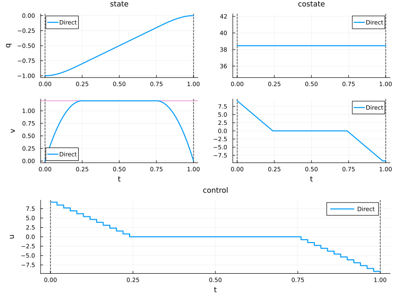
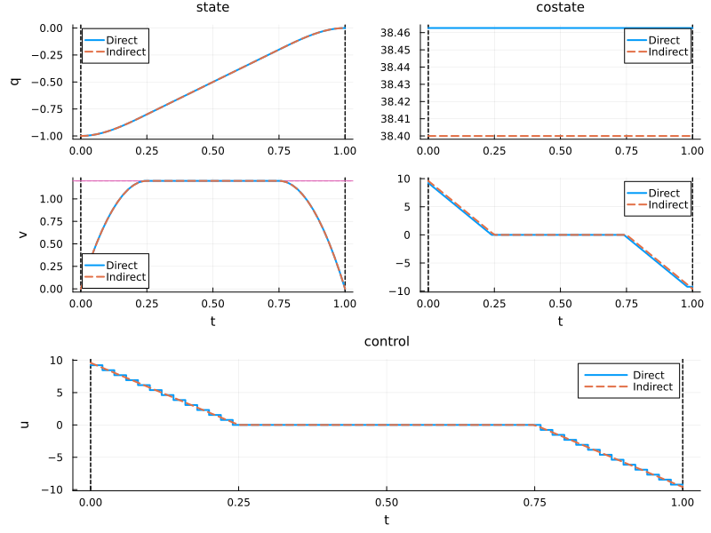
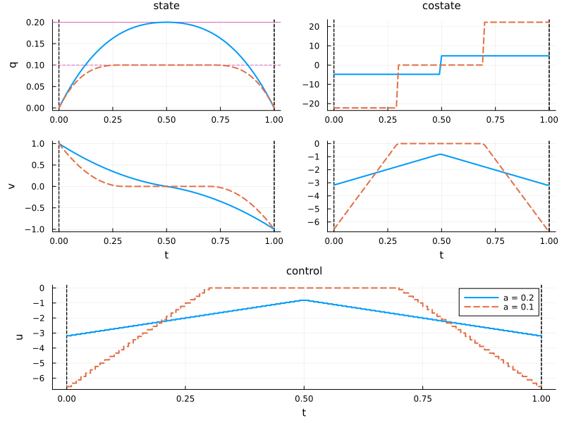
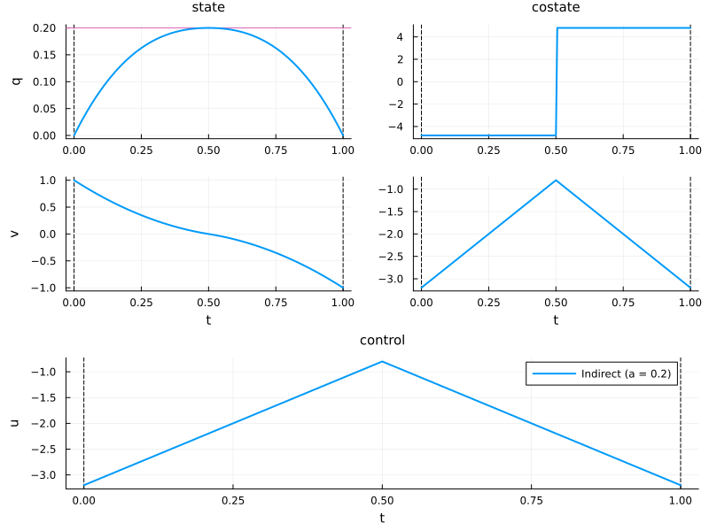
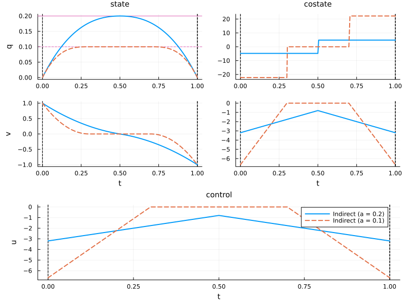

State constraint
This example illustrates how state constraints of different orders affect the structure of optimal solutions for the double integrator energy minimization problem. It demonstrates both direct and indirect solution approaches. Some examples with state constraints of different orders are solved analytically in Bryson et al.[1] and Jacobson et al.[2].
Let us consider a wagon moving along a rail, whose acceleration can be controlled by a force $u$. We denote by $x = (q, v)$ the state of the wagon, where $q$ is the position and $v$ the velocity.

We assume that the mass is constant and equal to one, and that there is no friction. The dynamics are given by
\[ \dot q(t) = v(t), \quad \dot v(t) = u(t),\quad u(t) \in \R,\]
which is simply the double integrator system. Let us consider a transfer starting at time $t_0 = 0$ and ending at time $t_f = 1$, for which we want to minimise the transfer energy
\[ \frac{1}{2}\int_{0}^{1} u^2(t) \, \mathrm{d}t\]
starting from $x(0) = (-1, 0)$ and aiming to reach the target $x(1) = (0, 0)$.
First, we need to import the OptimalControl.jl package to define the optimal control problem, NLPModelsIpopt.jl to solve it, and Plots.jl to visualise the solution.
using OptimalControl
using NLPModelsIpopt
using PlotsOptimal control problem
Let us define the problem with the @def macro:
t0 = 0; tf = 1; x0 = [-1, 0]; xf = [0, 0]
ocp = @def begin
t ∈ [t0, tf], time
x = (q, v) ∈ R², state
u ∈ R, control
x(t0) == x0
x(tf) == xf
ẋ(t) == [v(t), u(t)]
0.5∫( u(t)^2 ) → min
endMathematical formulation
\[ \begin{aligned} & \text{Minimise} && \frac{1}{2}\int_0^1 u^2(t) \,\mathrm{d}t \\ & \text{subject to} \\ & && \dot{x}(t) = [v(t), u(t)], \\[1.0em] & && x(0) = (-1,0), \\[0.5em] & && x(1) = (0,0). \end{aligned}\]
For a comprehensive introduction to the syntax used above to define the optimal control problem, see this abstract syntax tutorial. In particular, non-Unicode alternatives are available for derivatives, integrals, etc.
First-order state constraint
We now add a path constraint on the maximal velocity:
\[ v(t) \le 1.2.\]
This is a first-order state constraint: differentiating $g(x) = v_{\max} - v$ once already makes the control appear,
\[ \frac{\mathrm{d}}{\mathrm{d}t}g(x(t)) = -\dot{v}(t) = -u(t),\]
which fixes $u = 0$ on the boundary arc.
The workflow demonstrates a practical strategy: a direct method on a coarse grid first identifies the problem structure and provides an initial guess for the indirect method, which then computes a precise solution via shooting based on Pontryagin's Maximum Principle.
Direct method: constrained case
Let us model, solve and plot the optimal control problem with this constraint.
# the upper bound for v
v_max = 1.2
# the optimal control problem
ocp = @def begin
t ∈ [t0, tf], time
x = (q, v) ∈ R², state
u ∈ R, control
v(t) ≤ v_max # state constraint
x(t0) == x0
x(tf) == xf
ẋ(t) == [v(t), u(t)]
0.5∫( u(t)^2 ) → min
end
# solve with a direct method
direct_sol = solve(ocp; grid_size=50)
# plot the solution
plt = plot(direct_sol; label="Direct", size=(800, 600))
The solution has three phases (unconstrained-constrained-unconstrained arcs), requiring definition of Hamiltonian flows for each phase and a shooting function to enforce boundary and switching conditions.
Indirect method: constrained case
Under the normal case, the pseudo-Hamiltonian reads:
\[H(x, p, u, \mu) = p_1 v + p_2 u - \frac{u^2}{2} + \mu\, g(x),\]
where $g(x) = v_{\max} - v$. Along a boundary arc we have $g(x(t)) = 0$; differentiating gives:
\[ \frac{\mathrm{d}}{\mathrm{d}t}g(x(t)) = -\dot{v}(t) = -u(t) = 0.\]
The zero control maximises the Hamiltonian, so $p_2(t) = 0$ along that arc. From the adjoint equation we then have
\[ \dot{p}_2(t) = -p_1(t) + \mu(t) = 0 \quad \Rightarrow \mu(t) = p_1(t).\]
Because the adjoint vector is continuous at both the entry time $t_1$ and the exit time $t_2$, the unknowns are $p_0 \in \mathbb{R}^2$ together with $t_1$ and $t_2$. The target condition supplies two equations, $g(x(t_1)) = 0$ enforces the state constraint, and $p_2(t_1) = 0$ encodes the switching condition.
using OrdinaryDiffEq # Ordinary Differential Equations (ODE) solver
using NonlinearSolve # Nonlinear Equations (NLE) solver
# flow for unconstrained extremals
f_interior = Flow(ocp, (x, p) -> p[2])
ub = 0 # boundary control
g(x) = v_max - x[2] # constraint: g(x) ≥ 0
μ(p) = p[1] # dual variable
# flow for boundary extremals
f_boundary = Flow(ocp, (x, p) -> ub, (x, u) -> g(x), (x, p) -> μ(p))
# shooting function
function shoot!(s, p0, t1, t2)
x_t0, p_t0 = x0, p0
x_t1, p_t1 = f_interior(t0, x_t0, p_t0, t1)
x_t2, p_t2 = f_boundary(t1, x_t1, p_t1, t2)
x_tf, p_tf = f_interior(t2, x_t2, p_t2, tf)
s[1:2] = x_tf - xf
s[3] = g(x_t1)
s[4] = p_t1[2]
return nothing
endWe can derive an initial guess for the costate and the entry/exit times from the direct solution:
t = time_grid(direct_sol) # the time grid as a vector
x = state(direct_sol) # the state as a function of time
p = costate(direct_sol) # the costate as a function of time
# initial costate
p0 = p(t0)
# t1, t2: entry and exit of the constrained arc (v ≈ v_max)
active = findall(t -> 0 ≤ g(x(t)) ≤ 1e-3, t)
t1 = t[first(active)] # entry time
t2 = t[last(active)] # exit timeWe can now solve the shooting equations.
# auxiliary in-place NLE function
nle!(s, ξ, _) = shoot!(s, ξ[1:2], ξ[3], ξ[4])
# initial guess for the Newton solver
ξ_guess = [p0..., t1, t2]
# NLE problem with initial guess
prob = NonlinearProblem(nle!, ξ_guess)
# resolution of the shooting equations
shooting_sol = solve(prob; show_trace=Val(true))
p0, t1, t2 = shooting_sol.u[1:2], shooting_sol.u[3], shooting_sol.u[4]
# print the costate solution and the entry and exit times
println("\np0 = ", p0, "\nt1 = ", t1, "\nt2 = ", t2)
Algorithm: NewtonRaphson(
descent = NewtonDescent(),
autodiff = AutoForwardDiff(),
vjp_autodiff = AutoReverseDiff(
compile = false
),
jvp_autodiff = AutoForwardDiff(),
concrete_jac = Val{false}()
)
---- ------------- -----------
Iter f(u) inf-norm Step 2-norm
---- ------------- -----------
0 9.23204318e-02 0.00000000e+00
1 3.69427252e-03 6.09759937e-01
2 6.59807546e-04 4.98311337e-01
3 1.28891683e-08 4.83741523e-03
4 6.71852036e-15 2.73343989e-08
Final 6.71852036e-15
----------------------
p0 = [38.400000000000055, 9.599999999999994]
t1 = 0.24999999999999958
t2 = 0.7499999999999999To reconstruct the constrained trajectory, concatenate the flows as follows: an unconstrained arc until $t_1$, a boundary arc from $t_1$ to $t_2$, and a final unconstrained arc from $t_2$ to $t_f$. This composition yields the full solution (state, costate, and control), which we then plot alongside the direct method for comparison.
# concatenation of the flows
φ = f_interior * (t1, f_boundary) * (t2, f_interior)
# compute the solution: state, costate, control...
indirect_sol = φ((t0, tf), x0, p0; saveat=range(t0, tf, 100))
# plot the solution on the previous plot
plot!(plt, indirect_sol; label="Indirect", color=2, linestyle=:dash)
- You can use MINPACK.jl instead of NonlinearSolve.jl.
- For more details about the flow construction, visit the Compute flows from optimal control problems page.
- For the unconstrained version of this problem, see the Energy minimisation example.
Second-order state constraint
We now consider the same double integrator with different boundary conditions and a constraint on the position $x_1 = q$:[1]
\[ q(t) \le a.\]
The boundary conditions are $x(0) = (0, 1)$ and $x(1) = (0, -1)$.
This is a second-order state constraint: the control $u$ appears only after differentiating $g(x) = a - q$ twice,
\[ \frac{\mathrm{d}}{\mathrm{d}t}g(x(t)) = -\dot{q}(t) = -v(t) \quad \text{(no control)},\]
\[ \frac{\mathrm{d}^2}{\mathrm{d}t^2}g(x(t)) = -\dot{v}(t) = -u(t) \quad \text{(control appears)}.\]
On a boundary arc where $g(x(t)) = 0$, both derivatives must vanish, forcing $v(t) = 0$ and $u(t) = 0$.
Solution structure
The unconstrained optimal trajectory for these boundary conditions is $q(t) = t - t^2$, which reaches its maximum $1/4$ at $t = 1/2$. A characteristic feature of second-order state constraints is the existence of an intermediate regime between the unconstrained and boundary-arc cases[3]. The solution structure depends on $a$:
- Unconstrained ($a \ge 1/4$): the constraint is never active
- Touch point ($1/6 \le a \le 1/4$): the trajectory touches $q = a$ at a single instant, without sliding along the boundary
- Boundary arc ($a < 1/6$): the trajectory remains on $q = a$ for a finite time interval, during which $v(t) = 0$ and $u(t) = 0$
Direct method
We compare the two constrained cases using the direct method, taking $a = 0.2$ (touch point) and $a = 0.1$ (boundary arc).
# new boundary conditions
x0_bd = [0.0, 1.0]; xf_bd = [0.0, -1.0]
# parametric OCP: double integrator with position constraint q(t) ≤ a
function make_ocp(a)
@def begin
t ∈ [t0, tf], time
x = (q, v) ∈ R², state
u ∈ R, control
q(t) ≤ a
x(t0) == x0_bd
x(tf) == xf_bd
ẋ(t) == [v(t), u(t)]
0.5∫( u(t)^2 ) → min
end
endWe now solve both cases using this parametric OCP definition.
sol_touch = solve(make_ocp(0.2); grid_size=100, display=false) # touch point
sol_arc = solve(make_ocp(0.1); grid_size=100, display=false) # boundary arc
state_style = (legend=false, )
costate_style = (legend=false, )
plt_bd = plot(
sol_touch;
label="a = 0.2",
size=(800, 600),
state_style=state_style,
costate_style=costate_style,
)
plot!(
plt_bd,
sol_arc;
label="a = 0.1",
color=2,
linestyle=:dash,
state_style=state_style,
costate_style=costate_style,
)
Indirect method: touch point case
For the touch point case ($a = 0.2$), the optimal solution consists of two unconstrained arcs on $[t_0, t_1]$ and $[t_1, t_f]$, joined at the contact instant $t_1$ where $q(t_1) = a$ and $v(t_1) = 0$. The costate is discontinuous at $t_1$: the first component $p_q$ undergoes a jump $\Delta p_q$ while $p_v$ remains continuous.
The shooting unknowns are therefore the initial costate $p_0 \in \mathbb{R}^2$, the contact time $t_1$, and the costate jump $\Delta p_q$. The four shooting conditions are:
\[x(t_f) = x_f, \quad q(t_1) = a, \quad v(t_1) = 0.\]
a_touch = 0.2
# interior (unconstrained) flow
fs_bd = Flow(make_ocp(a_touch), (x, p) -> p[2])
# constraint: g(x) = a - q ≥ 0
g_bd(x) = a_touch - x[1]
# shooting function: unknowns p0 (2D), t1 (contact time), Δpq (costate jump)
function shoot_touch!(s, p0, t1, Δpq)
x_t1, p_t1 = fs_bd(t0, x0_bd, p0, t1) # arc 1: t0 → t1
p_t1_plus = [p_t1[1] + Δpq, p_t1[2]] # costate jump at t1
x_tf, _ = fs_bd(t1, x_t1, p_t1_plus, tf) # arc 2: t1 → tf
s[1:2] = x_tf - xf_bd # reach target
s[3] = g_bd(x_t1) # touch: q(t1) = a
s[4] = x_t1[2] # tangency: v(t1) = 0
return nothing
endWe extract the initial guess from the direct solution sol_touch.
t_grid = time_grid(sol_touch)
x_sol = state(sol_touch)
p_sol = costate(sol_touch)
p0_guess = p_sol(t0)
# t1: time where q(t) is closest to the constraint bound a
t1_guess = t_grid[argmin(abs.(g_bd.(x_sol.(t_grid))))]
# Δpq: estimated costate jump around t1
ε = 0.05 * (tf - t0)
Δpq_guess = p_sol(t1_guess + ε)[1] - p_sol(t1_guess - ε)[1]
println("p0 guess = ", p0_guess)
println("t1 guess = ", t1_guess)
println("Δpq guess = ", Δpq_guess)p0 guess = [-4.801919965702679, -3.1764703731542085]
t1 guess = 0.5
Δpq guess = 9.603838330599181nle_touch!(s, ξ, _) = shoot_touch!(s, ξ[1:2], ξ[3], ξ[4])
ξ_guess = [p0_guess..., t1_guess, Δpq_guess]
sol_shoot_touch = solve(NonlinearProblem(nle_touch!, ξ_guess); show_trace=Val(true))
p0_touch = sol_shoot_touch.u[1:2]
t1_touch = sol_shoot_touch.u[3]
Δpq_touch = sol_shoot_touch.u[4]
println("\np0 = ", p0_touch, "\nt1 = ", t1_touch, "\nΔpq = ", Δpq_touch)
Algorithm: NewtonRaphson(
descent = NewtonDescent(),
autodiff = AutoForwardDiff(),
vjp_autodiff = AutoReverseDiff(
compile = false
),
jvp_autodiff = AutoForwardDiff(),
concrete_jac = Val{false}()
)
---- ------------- -----------
Iter f(u) inf-norm Step 2-norm
---- ------------- -----------
0 2.40098184e-02 0.00000000e+00
1 7.23978838e-16 2.39178258e-02
Final 7.23978838e-16
----------------------
p0 = [-4.800000000000086, -3.200000000000021]
t1 = 0.4999999999999979
Δpq = 9.600000000000092The analytical solution gives $t_1 = 1/2$, $p_q = -4.8$ on $[t_0, t_1)$, $p_q = +4.8$ on $(t_1, t_f]$, with a jump of $9.6$ and an optimal cost of $2.24$.
# concatenate: arc 1 → costate jump → arc 2
f_touch = fs_bd * (t1_touch, [Δpq_touch, 0.0], fs_bd)
# reconstruct the indirect solution
indirect_touch = f_touch((t0, tf), x0_bd, p0_touch; saveat=range(t0, tf, 100))
plt_indirect = plot(indirect_touch; label="Indirect (a = 0.2)", size=(800, 600),
state_style=(legend=false,), costate_style=(legend=false,))
Indirect method: boundary arc case
For the boundary arc case ($a = 0.1$), the optimal solution consists of three arcs: two unconstrained arcs on $[t_0, t_1]$ and $[t_2, t_f]$, separated by a boundary arc on $[t_1, t_2]$ where $q(t) = a$ and $v(t) = 0$. The pseudo-Hamiltonian is
\[H(x, p, u, \mu) = p_q\, v + p_v\, u + 0.5\, p^0 u^2 + \mu\, g(x),\]
where $p^0 = -1$ in the normal case and $g(x) = a - q \geq 0$ is the constraint. Along the boundary arc, the control is $u = 0$, since differentiating $g(x) = a - q \geq 0$ twice gives $\ddot{q} = u = 0$. From the maximisation condition, $p_v(t) = 0$ along the arc. Differentiating the adjoint equation $\dot{p}_v = -p_q$ and using $p_v = 0$ yields $p_q = 0$. Differentiating further gives $\mu = \dot{p}_q = 0$. The costate has jumps $(\Delta p_q^1, 0)$ and $(\Delta p_q^2, 0)$ at $t_1$ and $t_2$ respectively.
The six shooting unknowns are the initial costate $p_0 \in \mathbb{R}^2$, the entry and exit times $t_1$ and $t_2$, and the two jumps $\Delta p_q^1$ and $\Delta p_q^2$. The shooting conditions are:
\[x(t_f) = x_f, \quad q(t_1) = a, \quad v(t_1) = 0, \quad p_v(t_1^+) = 0, \quad p_q(t_1^+) = 0.\]
a_arc = 0.1
# interior (unconstrained) flow
fs_arc = Flow(make_ocp(a_arc), (x, p) -> p[2])
# boundary arc flow: u = 0, constraint g(x) = a - q ≥ 0, multiplier μ = 0
fc_bd = Flow(make_ocp(a_arc), (x, p) -> 0, (x, u) -> a_arc - x[1], (x, p) -> 0)
# constraint function
g_arc(x) = a_arc - x[1]
# shooting function: unknowns p0 (2D), t1, t2, Δpq1, Δpq2
function shoot_arc!(s, p0, t1, t2, Δpq1, Δpq2)
x_t1, p_t1 = fs_arc(t0, x0_bd, p0, t1) # arc 1: t0 → t1
p_t1_plus = [p_t1[1] + Δpq1, p_t1[2]] # costate jump at t1
x_t2, p_t2 = fc_bd(t1, x_t1, p_t1_plus, t2) # arc 2: t1 → t2 (boundary)
p_t2_plus = [p_t2[1] + Δpq2, p_t2[2]] # costate jump at t2
x_tf, _ = fs_arc(t2, x_t2, p_t2_plus, tf) # arc 3: t2 → tf
s[1:2] = x_tf - xf_bd # reach target
s[3] = g_arc(x_t1) # touch: q(t1) = a
s[4] = x_t1[2] # tangency: v(t1) = 0
s[5] = p_t1_plus[2] # switching: pv(t1+) = 0
s[6] = p_t1_plus[1] # arc condition: pq(t1+) = 0
return nothing
endWe extract the initial guess from the direct solution sol_arc.
t_grid_arc = time_grid(sol_arc)
x_sol_arc = state(sol_arc)
p_sol_arc = costate(sol_arc)
p0_guess_arc = p_sol_arc(t0)
# t1, t2: entry and exit of the boundary arc (q ≈ a)
active = findall(t -> 0 ≤ g_arc(x_sol_arc(t)) ≤ 1e-3, t_grid_arc)
t1_guess_arc = t_grid_arc[first(active)]
t2_guess_arc = t_grid_arc[last(active)]
# jumps: costate difference around t1 and t2
ε_arc = 0.1 * (tf - t0)
Δpq1_guess = p_sol_arc(t1_guess_arc + ε_arc)[1] - p_sol_arc(t1_guess_arc - ε_arc)[1]
Δpq2_guess = p_sol_arc(t2_guess_arc + ε_arc)[1] - p_sol_arc(t2_guess_arc - ε_arc)[1]
println("p0 guess = ", p0_guess_arc)
println("t1 guess = ", t1_guess_arc)
println("t2 guess = ", t2_guess_arc)
println("Δpq1 guess = ", Δpq1_guess)
println("Δpq2 guess = ", Δpq2_guess)p0 guess = [-22.232212000213185, -6.557739478751586]
t1 guess = 0.24
t2 guess = 0.76
Δpq1 guess = 22.22833257450409
Δpq2 guess = 22.22796306210538nle_arc!(s, ξ, _) = shoot_arc!(s, ξ[1:2], ξ[3], ξ[4], ξ[5], ξ[6])
ξ_guess_arc = [p0_guess_arc..., t1_guess_arc, t2_guess_arc, Δpq1_guess, Δpq2_guess]
sol_shoot_arc = solve(NonlinearProblem(nle_arc!, ξ_guess_arc); show_trace=Val(true))
p0_arc = sol_shoot_arc.u[1:2]
t1_arc = sol_shoot_arc.u[3]
t2_arc = sol_shoot_arc.u[4]
Δpq1 = sol_shoot_arc.u[5]
Δpq2 = sol_shoot_arc.u[6]
println("\np0 = ", p0_arc)
println("t1 = ", t1_arc, " (expect ", 3a_arc, ")")
println("t2 = ", t2_arc, " (expect ", 1 - 3a_arc, ")")
println("Δpq1 = ", Δpq1, " Δpq2 = ", Δpq2, " (expect equal by symmetry)")
Algorithm: NewtonRaphson(
descent = NewtonDescent(),
autodiff = AutoForwardDiff(),
vjp_autodiff = AutoReverseDiff(
compile = false
),
jvp_autodiff = AutoForwardDiff(),
concrete_jac = Val{false}()
)
---- ------------- -----------
Iter f(u) inf-norm Step 2-norm
---- ------------- -----------
0 1.22200860e+00 NaN
1 1.22442987e-01 5.06007076e+00
2 5.27595420e-02 5.27592760e+00
3 7.24011079e-05 2.12070939e-01
4 3.37589512e-10 2.66019902e-04
5 5.10702591e-15 1.84069187e-08
Final 5.10702591e-15
----------------------
p0 = [-22.222222222222403, -6.666666666666687]
t1 = 0.2999999999999985 (expect 0.30000000000000004)
t2 = 0.6999999999999991 (expect 0.7)
Δpq1 = 22.222222222222403 Δpq2 = 22.222222222222133 (expect equal by symmetry)# concatenate: arc 1 → jump → boundary arc → jump → arc 3
f_arc = fs_arc * (t1_arc, [Δpq1, 0.0], fc_bd) * (t2_arc, [Δpq2, 0.0], fs_arc)
# reconstruct the indirect solution
indirect_arc = f_arc((t0, tf), x0_bd, p0_arc; saveat=range(t0, tf, 100))
plot!(plt_indirect, indirect_arc; label="Indirect (a = 0.1)", color=2, linestyle=:dash,
state_style=(legend=false,), costate_style=(legend=false,))
- 1Bryson, A.E., Denham, W.F., & Dreyfus, S.E. (1963). Optimal programming problems with inequality constraints I: necessary conditions for extremal solutions. AIAA Journal, 1(11), 2544–2550. doi.org/10.2514/3.2107
- 2Jacobson, D.H., Lele, M.M., & Speyer, J.L. (1971). New necessary conditions of optimality for control problems with state-variable inequality constraints. Journal of Mathematical Analysis and Applications, 35, 255–284.
- 3Bryson, A.E. & Ho, Y.-C. (1975). Applied Optimal Control: Optimization, Estimation and Control. CRC Press.